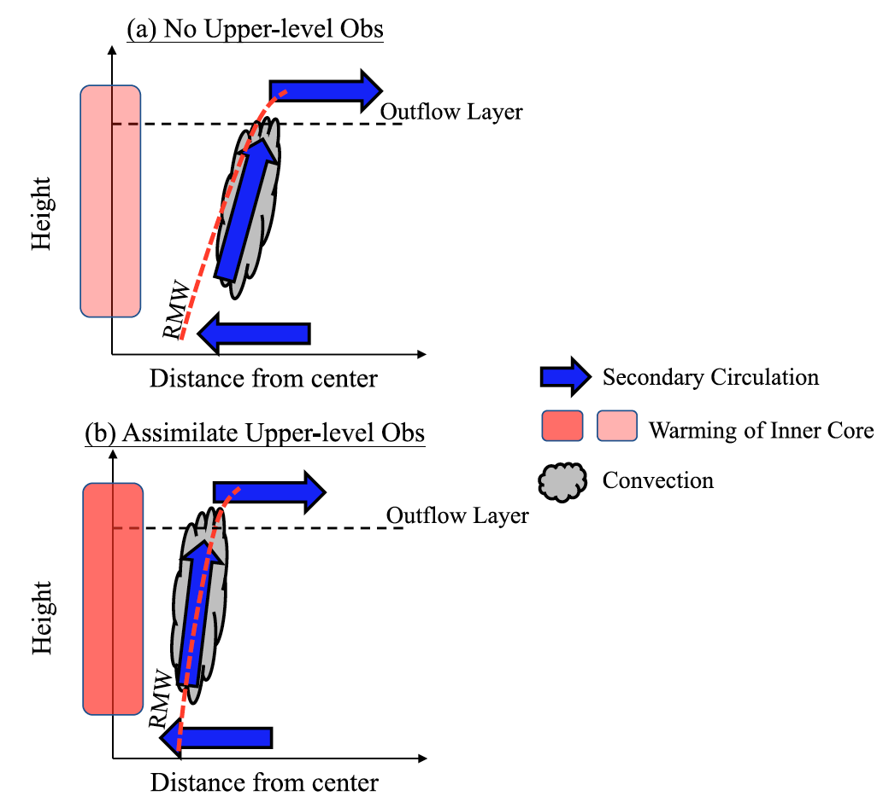
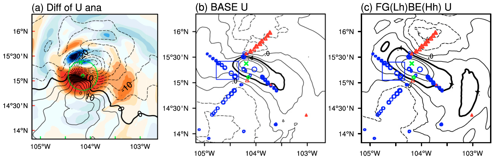
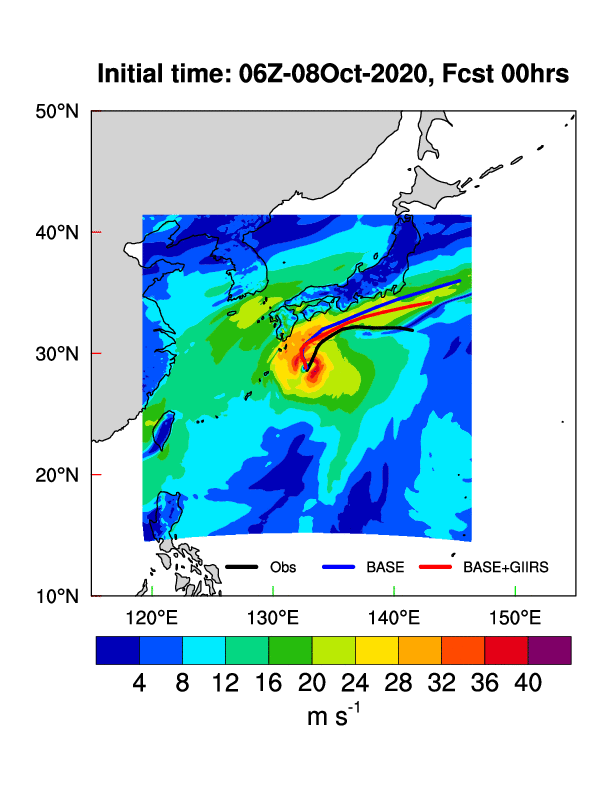
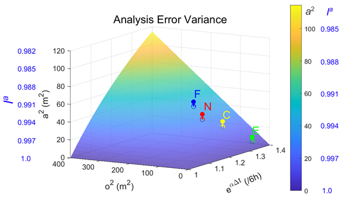
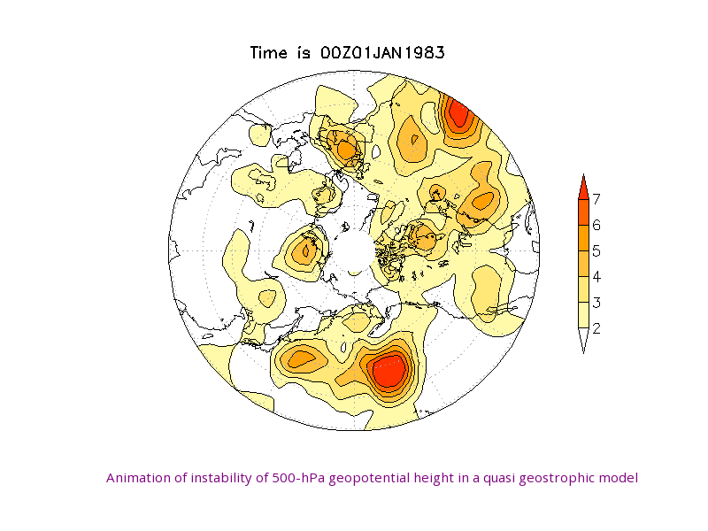
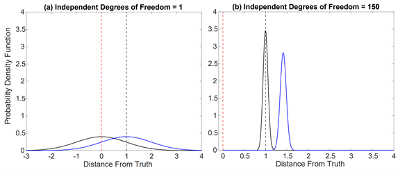
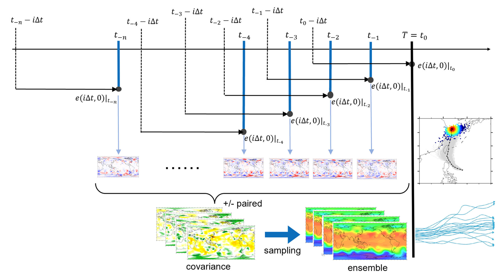
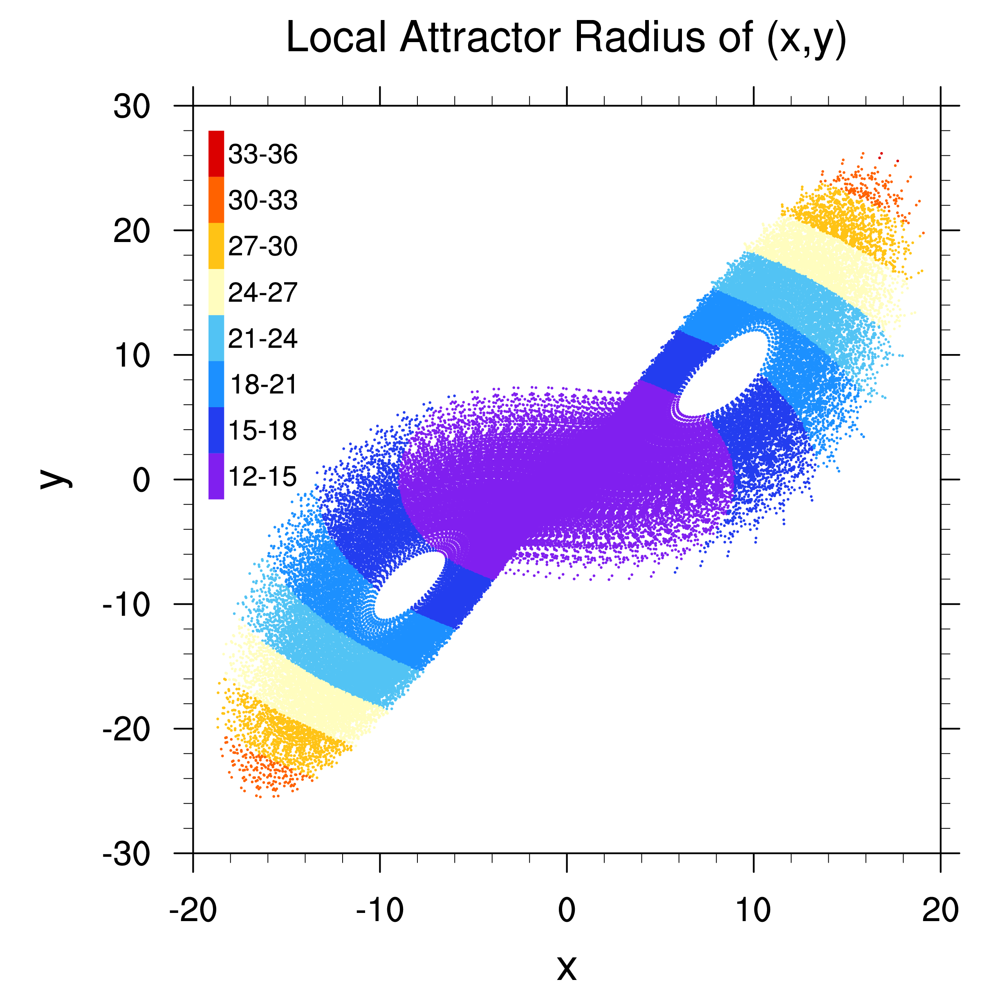
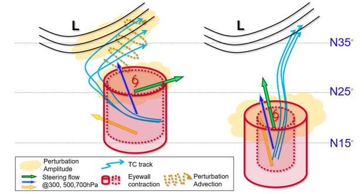
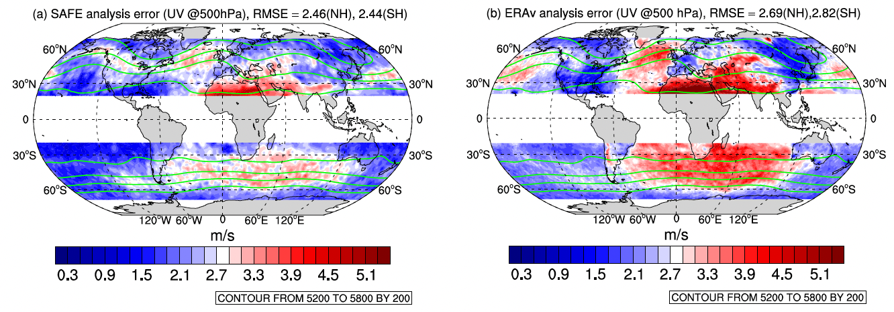

Education
2010-2015 Ph.D. Institute of Atmospheric Physics, Chinese Academy of Sciences, Beijing, China
Major: Atmospheric Sciences
2006-2010 B.S. School of Atmospheric Sciences, Nanjing University of Information Science & Technology, Nanjing, China
Major: Atmospheric Sciences
Employment
2020.12-Present Research Scientist, Department of Atmospheric and Oceanic Sciences, Fudan University, Shanghai, China.
2020.4-2020.10 Research Fellow, School of Meteorology, the University of Oklahoma, Norman, OK.
2017.7-2020.4 Post-doctoral Research Associate, School of Meteorology, the University of Oklahoma, Norman, OK.
2015.8-2017.6 National Research Council Research Associate, Global Systems Division, NOAA/OAR/ESRL, Boulder, CO.
Research interests
Data assimilation
- Ensemble data assimilation for tropical cyclones
- DA impact of noval types of observations
- Localized particle filter
Ensemble forecasting
- ensemble initialization for weather forecasts
- AI-based ensemble forecasting
- Error estimation
- Forecast post-process
Nonlinear error growth and predictability
- Nonlinear local Lyapunov exponents and vectors
- Chaotic attractor dynamics
- Atmospheric predictability limit
Research highlights
Data Assimilation
- Hybrid Data Assimilation for Tropical Cyclone
Feng and Wang (2019) MWR found that the assimilation of TCI dropsonde observations in TC upper-level outflow layer, despite being generally regarded as the exit of TC energy, plays a critical role in modulating the TC outflow and secondary circulation, and exerts an important impact on the TC intensity and structure prediction.

Schematic of the impacts (a) without and (b) with the assimilation of TCI dropsonde observations in upper levels on the hurricane structure and intensity.
Feng and Wang (2021) MWR demonstrated that improving the model resolution of either the first guess or background ensemble in DA can improve the TC analyzed intensity and structure but through distinct mechanisms.

(a) Difference (shaded) of 1000-hPa U wind analysis between FG(Lh)BE(Hh) and BASE overlaid by U analysis of BASE in the initial-hurricane case. (b),(c) The background ensemble correlation fields (contour) at the same level and the observational innovation.
Feng et al. (2022) AR enhanced the track, surface wind, and precipitation forecasts of TCs during the 2020–2021 typhoon season by effectively assimilating CNOP-based targeted observations from the GIIRS instrument onboard the FengYun-4A satellite.

Track forecasts of Typhoon Chan-hom with and w/o assimilation of FY-4A/GIIRS obs.
- Data Assimilation Theory and Algorithm
Feng et al (2020) MWR compared two Non-Gaussian filters, the local particle filter (LPF) and the local nonlinear ensemble transform filter (LNETF). (1) Both methods preserve the posterior mean and variance of the Particle Filter. (2) LNETF shows more accurate posterior probability distribution but slightly worse spatial correlation of posteriors than LPF.
Feng et al. (2025) QJRMS proposed a theoretical model describing the evolution of errors during the cyclic assimilation process. Using this theoretical model, combined with evaluations from an operational system, the information balance dynamics and their key influencing factors in the cyclic assimilation system are elucidated from both theoretical and practical perspectives.

Error variances andinformation in actual and optimizedanalyses from FNMOC (F), NCEP (N),CMC (C), and ECMWF (E).
Error Growth Dynamics & Ensemble Forecasting
- Sampling with Ensemble
Feng et al (2014) JAS (2018) JAS developed the Nonlinear Local Lyapunov Vectors (NLLV) as an orthogonal extension of the classic Bred Vector (BV). Numerical experiments reveal that the NLLVs can span a higher-dimensional unstable subspace of local perturbations and better capture the spatial error growth than the BVs.

Animation of instability of 500-hPa geopotential height captured by NLLVs in a QG model
Feng et al (2024) QJRMS reviewed the history and fundamental theory of ensemble sampling. Ensemble members consistently degrade the skill of the unperturbed forecast until medium range. The mean derived from ensembles suffer an 18-hour loss in forecast Information. Since Information is a sufficient statistic, any rational user can benefit more from the unperturbed, than from an ensemble of weather forecasts. Can alternative, statistical applications provide comparable, or even higher quality probabilistic and other products, at the fraction of the cost of running an ensemble?

Reality (red dashed vertical line, unknown in practice), the distribution of its best estimate assuming error in it is known and normally distributed (black curve), an example for a best estimate (selected at a distance of the standard deviation from Reality, black dashed vertical line), and the estimated distribution of reality around the best estimate (blue curve) in a 1- (panel a, directional distance) and 150-dimensional space (panel b, absolute distance).
Pu, Mu, and Feng* et al. (2025) npjCAS introduces a physics-constrained perturbation scheme for AI-based weather models. The scheme generates initial perturbations with physically realistic growth and spatial covariance. TC track forecasts with 2,000 members outperform ECMWF in probability distributions and extreme scenarios.

Schematic of ensemble initialization scheme for FuXi data-driven model.
Chaotic Attractor Dynamics & Atmospheric Predictability Limit
- Chaotic Dynamics
The Global and Local Attractor Radii (GAR and LAR) are introduced to measure the geometric properties of attractors. The quantitative relationships between GAR and LAR are calculated, and are found closely related to the chaotic error saturation behavior. GAR and LAR thus can provide objective criteria to measure the global and local predictability limits of atmospheric attractors (Li et al. 2018). The LAR can also be applied to the estimation of control and ensemble mean forecast errors (Feng et al. 2019).

Distribution of LAR on the x–y plane in the phase space of the Lorenz63 model
- Predictability of Tropical Cyclones
Liu, Feng, et al. (2026) MWR identifies a previously unrecognized source of forecast uncertainty in westerly-trough-induced typhoon recurvature: under favorable storm–trough separation and environmental ventilation, inner-core initial errors propagate outward and substantially modify the environmental steering flow.

Schematic of inner-core perturbation–environment interactions for (left) Chan-hom and (right) Maysak.
Statistical Analysis & Forecast Error Estimation
A Statistical Analysis and Forecast Error (SAFE) estimation method was developed and extended to the application of point-wise error estimation. The study is of critical importance to a reliable evaluation of the accuracy of analysis fields in data assimilation (DA) and the tuning of initial perturbation amplitude in ensemble forecasting. An initial evaluation in a moderately complex QG model manifests that the SAFE better estimates the distribution and amplitude of analysis error variance than the EnKF (Feng et al. 2017 Tellus). The validity of two key assumptions of SAFE were evaluated and verified in an OSSE framework of the GFS DA/Prediction system of NCEP (Feng et al. 2020 QJRMS).
SAFE was first applied to estimate the annual variation and spatial distribution of analysis errors in the Global Forecast System of Global/Regional Assimilation and PrEdiction System (GRAPES_GFS) at the China Meteorological Administration since the beginning of its operational implementation (i.e., 2016–2021) (Feng et al. 2023 QJRMS).

Comparison of the grid-point analysis errors (shading, units: m⋅s−1) estimated by (a) SAFE and (b) ERAv (verified against ERA5 reanalysis) for UV at 500 hPa.
Publications
2026 Wu, X., D. Zheng, Y. Zhang, J. Feng, N. Wu, W. Yao, and H. Yu, 2026: Distinct Cloud-to-Ground Lightning Properties in Frontal Versus Warm-Sector Heavy Rainfall Events. Earth and Space Science, 13(2), e2025EA004861. https://doi.org/10.1029/2025EA004861. PDF
Pu, J., M. Mu, J. Feng, H. Li, 2026: Error growth dynamics and predictability of tropical cyclones in machine-learning weather prediction models. Quart. J. Roy. Meteor. Soc., e70257. https://doi.org/10.1175/MWR-D-25-0242.1. PDF
Liu, L., J. Feng*, Q. Li, B. Chen, 2026: Sensitivity of Tropical Cyclone Track Predictability to Initial Condition Errors in the Inner and Environmental Regions. Mon. Wea. Rev., 154(7), 1467-1489. https://doi.org/10.1002/qj.70257. PDF
Shi, W., B. Pan, ... J. Feng, et al., 2026: Distribution‐guided ensemble postprocessing for S2S precipitation forecasts: A seamless pathway using deep generative models. Journal of Geophysical Research: Machine Learning and Computation, e2025JH000993. https://doi.org/10.1029/2025JH000993. PDF
Yang, Y., J. Feng*, Y. Zhu, Y. Wei, J. Li, 2026: Comparison of Subseasonal Predictive Skill of the CFS and GEFS Operational Systems at NCEP and the Impact of Bias Correction. Weather and Forecasting 41(6), 1227-1247. https://doi.org/10.1175/WAF-D-25-0134.1. PDF
Toth, Z., R. Buizza, J. Feng, 2026: Chapter 2 - Weather forecasting: what sets the forecast skill horizon? Editor(s): Andrew W. Robertson, Frédéric Vitart, Sub-seasonal to Seasonal Prediction (Second Edition), Elsevier, Pages 21-68, ISBN 9780443315381, https://doi.org/10.1016/B978-0-443-31538-1.00021-X.
2025 Ji, C., B. Qin, M. Mu, J. Ma, X. Fang, J. Feng, Q. Wang, 2025: Optimal distributions of growing‐type initial perturbations for ensemble forecasts: Theory and application in the Lorenz‐96 model. Quart. J. Roy. Meteor. Soc., 151(767). DOI: 10.1002/qj.4913. PDF
Feng, J.*, Z. Toth, and M. Pena, 2025: The Limits of Knowing: An Equilibrium Between the Observational Gain and Chaotic Loss of Information in Data Assimilation. Quart. J. Roy. Meteor. Soc., Accepted. PDF
Sun, X., Zhong, X., Xu, X., ..., Feng, J., ..., 2025: A data-to-forecast machine learning system for global weather. Nature Communication, 16, 6658 (2025). https://doi.org/10.1038/s41467-025-62024-1. PDF
Feng, J., Zhao, C., Gu, J., Li, G., Xu, M., Lin, S., and Feng, J., 2025: Dust impacts on the Indian summer monsoon: chaotic or physical effect?. Atmos. Chem. Phys., 25, 12051–12068, https://doi.org/10.5194/acp-25-12051-2025, 2025. PDF
Zhong, X., L. Chen, H. Li*, R. Buizza, J. Liu, J. Feng*, ..., 2025: FuXi-ENS: A machine learning model for medium-range ensemble weather forecasting. Science Advances, DOI: 10.1126/sciadv.adu2854. PDF
Ma, L., J. Feng*, J. C. Pu, and L. Y. Liu, 2025: Performance and regime of ensemble perturbations in sampling initial and forecast errors at multiple spatial scales in the NCEP global ensemble forecast system. J. Meteor. Res., doi: 10.1007/s13351-026-5143-4. PDF
Cao, Y., S. Li, J. Feng*, L. Chen, H. Li, Y. Zhang, 2025: Enhancing machine learning models for nowcasting and short-term forecasting of precipitation with a novel probability-matching loss function. Geophysical Research Letters, 52,e2025GL119442. https://doi.org/10.1029/2025GL119442. PDF
Cao, Y., L. Chen, J. Wu, and, J. Feng, ..., 2025: Enhancing Nowcasting With Multi-Resolution Inputs Using Deep Learning: Exploring Model Decision Mechanisms. Geophysical Research Letters, 52(4), e2024GL113699. https://doi.org/10.1029/2024GL113699. PDF
Chen, J., Y. J. Zhu, W. S. Duan, ..., J. Feng, ..., 2025: A review on development, challenges, and future perspectives of ensemble forecast. J. Meteor. Res. 39(3), 534–558. https://doi.org/10.1007/s13351-025-4909-4. PDF
Zhan, R., J. Feng*, 2025: Causes and predictability of the “explosive” intensification of Super Typhoon Yagi after entering the South China Sea in 2024. Sci. China Earth Sci.. 68(4), 1298–1302. https://doi.org/10.1007/s11430-024-1533-7. PDF
Pu, J., M. Mu, J. Feng*, X. Zhong, and H. Li, 2025: A fast physics-based perturbation generator of machine learning weather model for efficient ensemble forecasts of tropical cyclone track. npj Clim Atmos Sci, 8: 128. https://doi.org/10.1038/s41612-025-01009-9. PDF
Wang, J., J. Feng, Y. Yang, J. Hu, and J. Yang, 2025: A comprehensive quality control algorithm for atmospheric motion vectors and its impacts on analysis and forecast of the China Meteorological Administration Global Forecast System. Quart. J. Roy. Meteor. Soc. 151:e4960. https://doi.org/10.1002/qj.4960 PDF
Luo, E., G. Chen, W. Wang, J. Feng, and Y. Gao, 2025: Effects of cloud vertical structure on the development of tropical cyclones: A case study based on In-Fa (2021). Atmospheric Research. 315, 107904. DOI: 10.1016/j.atmosres.2024.107904. PDF
2024 Feng, J., Z. Toth*, J. Zhang, and M. Pena, 2024: Ensemble forecasting: A foray of dynamics into the realm of statistics. Quart. J. Roy. Meteor. Soc., 150(762), 2537-2560. DOI: 10.1002/qj.4745. PDF
Z. L. Hou, J. P. Li*, Y. N. Diao, Y. Z. Zhang, Q. J. Zhong, J. Feng, and X. Qi, 2024: Asymmetric Influences of ENSO Phases on the Predictability of North Pacific Sea Surface Temperature. Geophysical Research Letters. 51(7). DOI: 10.1029/2023GL108091. PDF
Feng, J., F. Judt, J. Zhang, and X. G. Wang, 2024: Influence of region-dependent error growth on the predictability of track and intensity of Typhoon Chan-hom (2020) in high-resolution HWRF ensembles. Atmospheric Research. 308, 107536, ISSN 0169-8095. DOI: 10.1016/j.atmosres.2024.107536. PDF
Liu, L. Y., J. Feng* , L. Ma, Y. R. Yang, X. T. Wu, and C. Wang, 2024: Ensemble-based sensitivity analysis of track forecasts of typhoon In-fa (2021) without and with model errors in the ECMWF, NCEP, and CMA ensemble prediction systems. Atmospheric Research. 309, 107596, ISSN 0169-8095. https://doi.org/10.1016/j.atmosres.2024.107596. PDF
2023 Feng, J., J. Wang*, G. Dai, F. Zhou, W. Duan, 2023: Spatiotemporal estimation of analysis errors in the operational global data assimilation system at the China Meteorological Administration using a modified SAFE method. Quart. J. Roy. Meteor. Soc., 149(755), 2301-2319. DOI: 10.1002/qj.4507. PDF
2022 Feng, J., X. Qin*, C. Wu, P. Zhang, L. Yang, X. S. Shen, W. Han, Y. Z. Liu, 2022: Improving typhoon predictions by assimilating the retrieval of atmospheric temperature profiles from the FengYun-4A's Geostationary Interferometric Infrared Sounder (GIIRS). Atmospheric Research, 280, 106391, ISSN 0169-8095, https://doi.org/10.1016/j.atmosres.2022.106391. PDF
Liu, D., C. Huang, J. Feng*, 2022: Influence of Assimilating Wind Profiling Radar Observations in Distinct Dynamic Instability Regions on the Analysis and Forecast of an Extreme Rainstorm Event in Southern China. Remote Sens. 14, 3478. https://doi.org/10.3390/rs14143478. PDF
Hou, Z., J. Li, R. Ding, and J. Feng, 2022: Investigating decadal variations of the seasonal predictability limit of sea surface temperature in the tropical Pacific. Clim. Dyn. 59, 1079–1096. https://doi.org/10.1007/s00382-022-06179-3. PDF
Jankov, I.*, Z. Toth, and J. Feng, 2022: Initial-Value vs. Model-Induced Forecast Error: A New Perspective. Meteorology, 1(4), 377-393, https://doi.org/10.3390/meteorology1040024. PDF
2021 Zhang, J., J. Feng*, H. Li, Y. J. Zhu, X. F. Zhi, and F. Zhang, 2021: Unified ensemble mean forecasting of tropical cyclones based on the feature-oriented mean method. Wea. Forecasting, 36(6), 1945–1959, DOI: 10.1175/WAF-D-21-0062.1 PDF
Li, X., J. Feng, R. Q. Ding*, and J. P. Li, 2021: Application of Backward Nonlinear Local Lyapunov Exponent Method to Assessing the Relative Impacts of Initial Condition and Model Errors on Local Backward Predictability. Adv. Atmos. Sci., 38, 1486–1496, https://doi.org/10.1007/s00376-021-0434-2 PDF
Feng, J. and X. G. Wang*, 2021: Impact of increasing horizontal and vertical resolution of the hurricane WRF model on the analysis and prediction of Hurricane Patricia (2015). Mon. Wea. Rev., 149(2), 419–441, DOI: 10.1175/MWR-D-20-0144.1 PDF
2020 Feng, J. , J. Zhang*, Z. Toth, M. Pena, and S. Ravela, 2020: A New Measure of Ensemble Central Tendency. Wea. Forecasting, 35(3), 879–889. https://doi.org/10.1175/WAF-D-19-0213.1 PDF
Feng, J. , X. G. Wang*, and J. Poterjoy, 2020: A comparison of two local moment matching nonlinear filters: local particle filter (LPF) and local nonlinear ensemble transform filter (LNETF). Mon. Wea. Rev., 148(11), 4377–4395, https://doi.org/10.1175/MWR-D-19-0368.1. PDF
Feng, J. *, Z. Toth, and M. Pena, 2020: Partition of Analysis and Forecast Error Variance into Growing and Decaying Components. Quart. J. Roy. Meteor. Soc., 146(728), 1302-1321. https://doi.org/10.1002/qj.3738 PDF
2019 Feng, J. and X. G. Wang*, 2019: Impact of assimilating upper-level dropsonde observations collected during the TCI field campaign on the prediction of intensity and structure of Hurricane Patricia (2015), Mon. Wea. Rev., 147, 3069–3089. https://doi.org/10.1175/MWR-D-18-0305.1 PDF
Feng, J., J. P. Li*, J. Zhang, D. Q. Liu, and R. Q. Ding, 2019: The relationship between deterministic and ensemble mean forecast errors revealed by global and local attractor radii. Adv. Atmos. Sci., 36(3), 271–278. https://doi.org/10.1007/ s00376-018-8123-5. PDF
2018 Feng, J., R. Q. Ding, J. P. Li*, and Z. Toth, 2018: Comparison of nonlinear local Lyapunov vectors and bred vectors in estimating the spatial distribution of error growth. J. Atmos. Sci., 75, 1073–1087. DOI: 10.1175/JAS-D-17-0266.1 PDF
Hou, Z., Li, J.*, Ding, R.*, Karamperidou, C., Duan, W., Liu, T., & Feng, J., 2018. Asymmetry of the predictability limit of the warm ENSO phase. Geophysical Research Letters, 45, 7646–7653. https:// doi.org/10.1029/2018GL077880 PDF
Zhong, Q., L. Zhang, J. Li, R. Ding*, and J. Feng, 2018: Estimating the predictability limit of tropical cyclone tracks over the western North Pacific using observational data. Adv. Atmos. Sci. 35(12), 1491-1504. https://doi.org/ 10.1007/s00376-018-8008-7. PDF
Li, J. P.*, J. Feng, and R. Q. Ding 2018: Attractor Radius and Global Attractor Radius and their Application to the Quantification of Predictability Limits. Clim. Dyn., 51, 2359–2374, https://doi.org/10.1007/s00382-017-4017-y. PDF
Hou, Z., J. P. Li*, R. Q. Ding and J. Feng, 2018: The application of nonlinear local Lyapunov vectors to the Zebiak–Cane model and their performance in ensemble prediction. Clim. Dyn. 51, 283-304. DOI 10.1007/s00382-017-3920-6. PDF
2017 Feng, J.*, Z. Toth, and M. Peña, 2017: Spatial Extended Estimates of Analysis and Short-Range Forecast Error Variances. Tellus A, 69:1, 1325301. https://doi.org/10.1080/16000870.2017.1325301 PDF
Huai, X., J. P. Li*, R. Q. Ding, J. Feng and D. Q. Liu, 2017: Quantifying local predictability of the Lorenz system using the nonlinear local Lyapunov exponent, Atmospheric and Oceanic Science Letters, 10:5, 372-378. https://doi.org/10.1080/16742834.2017.1346457 PDF
2016 Feng, J., R. Q. Ding, J. P. Li* and D. Q. Liu, 2016: Comparison of nonlinear local Lyapunov vectors with bred vectors, random perturbations and ensemble transform Kalman filter strategies in a barotropic model. Adv. Atmos. Sci., 33(9), 1036–1046. doi: 10.1007/s00376-016-6003-4 PDF
Ding, R. Q., J. P. Li*, F. Zheng, J. Feng and D. Q. Liu, 2016: Estimating the limit of decadal-scale climate predictability using observational data. Clim. Dyn., 46(5), 1563–1580. DOI 10.1007/s00382-015-2662-6 PDF
2015 Liu, D. Q., J. Feng, J. P. Li* and J. C. Wang, 2015: The impacts of time-step size and spatial resolution on the prediction skill of the GRAPES-MESO forecast system. Chinese Journal of Atmos. Sci., 39(6), 1165–1178. DOI: 10.3878/j.issn.1006-9895.1501.14307 PDF
Liu, D. Q., R. Q. Ding, J. P. Li* and J. Feng, 2015: Preliminary application of the nonlinear local Lyapunov exponent to target observation. Chinese Journal of Atmos. Sci., 39(2), 329−337. DOI: 10.3878/j.issn.1006-9895.1405.13337. PDF
2014 Feng, J., R. Q. Ding, D. Q. Liu and J. P. Li*, 2014: The Application of Nonlinear Local Lyapunov Vectors to Ensemble Predictions in the Lorenz Systems. J. Atmos. Sci., 71(9), 3554–3567. DOI: https://doi.org/10.1175/JAS-D-13-0270.1. PDF
Professional Activities
2026.4-, Serve as Associate Editor of Journal Weather and Forecasting (WAF) of American Meteorological Society (AMS).
2026.1-, Serve as Associate Editor of Journal Monthly Weather Review (MWR) of American Meteorological Society (AMS).
2024.2-present, Serve as Editorial board member of Journal Nonlinear Processes in Geophysics (NPG) of European Geosciences Union (EGU). https://www.nonlinear-processes-in-geophysics.net/editorial_board.html
2022.8.1-8.5, Co-convener of Session AS21 "Ensemble Modeling of High-impact, Multi-scale Weather to Decadal Phenomena" in the 19th Annual Meeting of Asia Oceania Geosciences Society (AOGS), online, https://www.asiaoceania.org/aogs2022/public.asp?page=sessions_and_conveners.asp.
2021.9, Editor of Special Issue "Remote Sensing for the Improvement of High-Impact Weather Analyses and Forecasts" of Journal Remote Sensing, https://www.mdpi.com/journal/remotesensing/special_issues/weather_analysis.
2021.7.9-7.11, Co-convener of Session 11 "Numerical Modeling and Data Assimilation" of the 7th Geoscience Forum for Youth, Guiyang, China. http://www.qndxlt.com/theme.html.
2016-present, Member of American Meteorological Society (AMS).
2021-present, Member of European Geosciences Union (EGU).
Reviewer for Geoscientific Model Development, Journal of Geophysical Research, Advances in Atmospheric Sciences, Weather and Forecasting, Quarterly Journal of Royal Meteorological Society, Climate Dynamics, Atmosphere, Atmospheric Research, etc.
News

2026.04.25-04.29, Jie Feng participated in the Second Forum on Future Atmospheric Sciences and chaired a session on "Data Assimilation and Mechanisms of Occurrence and Development of Severe Weather.", Suzhou, Jiangsu.

2026.04.21-04.23, Jie Feng participated in the workshop on AI applications in tropical cyclone analysis and prediction, a meeting of the Expert Team on AI Applications in Tropical Cyclone Analysis and Forecasting (ET-AITC), and delivered an invited talk titled "AI for Atmospheric Predictability and Ensemble Weather Forecasting.".”

2025.11-present, Feng Jie serves as a co–chief expert of the Key Innovation Team on Ensemble Forecasting at the China Meteorological Administration, with Professor Zhu Yuejian as the team leader.”

2025.08.21-08.24, Jie Feng attended the 7th National Mesoscale Meteorology Conference held in Datong, Shanxi, and organized the session “Key Techniques and Predictability of High-Resolution Numerical Weather Prediction.”

2025.08.14-08.15, Jie Feng attended the 8th Nonlinear Atmospheric–Oceanic Sciences Symposium held in Hohhot and delivered a presentation titled “A fast physics-based perturbation generator of machine learning weather model for efficient ensemble forecasts of tropical cyclone track.

2025.07.27-08.01, Jie Feng organized and chaired the session “Ensemble Modeling and Prediction of High-Impact, Multi-Scale Weather to Decadal Events” at the 2025 AOGS Annual Meeting in Singapore.

2025.07.01-07.04, Feng Jie participated in the 9th Youth Innovation Competition on Lancang-Mekong Region’s Governance and Development (YICMG) held in Hanoi, Vietnam and delivered a one-hour invited keynote speech titled 'Better Forecast for a Better Future'.

2025.04.27-05.02, Feng Jie attended the 2025 EGU General Assembly in Vienna, Austria, and chaired the session titled 'Data Assimilation, AI4DA, and Research to Operations for Better Forecasting of High-Impact Weather Events'.

2025.04.15-04.18, Feng Jie attended the 21st National Symposium on Tropical Cyclone Science and delivered an oral presentation. Changsha, Hunan.

2025.04.12-04.13, Feng Jie attended the 4th Workshop on Atmospheric and Oceanic Predictability and gave an oral presentation titled "Study on the Information Balance Mechanism in Cycled Data Assimilation", Ningbo, Zhejiang.
2024.11.26-11.27, Feng Jie participated in the 2nd National Numerical Weather Prediction Technology Conference held in Hangzhou and gave an oral presentation.
2024.11.9-11.11, Feng Jie attended the 6th National Mesoscale Meteorology Conference held in Zhuhai and gave an invited presentation.

2024.10.13-10.19, Feng Jie and the research group members attended the IAMAS International Commission on Dynamical Meteorology (ICDM) 2024 Symposium held in Nanjing. PhD students Yang yanru, Liu liangyin, Ma li gave oral presentations".
2024.9.23-9.24, Feng Jie attended the GC REACH 2024 themed "A New Era of Risk. A New Era of Innovation" held in Hongkong, and gave an oral presentation titled "Scientific Prediction of Tropical Cyclones".
2024.8.15-8.16, Feng Jie attended the Symposium on Nonlinear Atmosphere-Ocean Dynamics and Predictability held in Yanji, Jilin Province, and delivered an oral presentation.
2024.6.23-6.28, Feng Jie, Wu Xiaotian, and Yang Yanru, attended the AOGS conference held in Pyeongchang, South Korea, and gave oral presentations.
2024.6.6, The undergraduate student Fan Zhuzhen guided by me successfully completed the undergraduate thesis defense.
2024.5.16-5.17, Feng Jie, Yang Yanru, and Pu Jingchen attended the first Beijing Symposium on Ensemble Forecasting and Prediction.
2024.5.15, Feng Jie received the "Outstanding Teacher in My Heart" honor from the Department of Atmospheric and Oceanic Sciences.
Advising
Ph.D Student
Liangyin Liu (2021-),
Li Ma (2022-),
Jingchen Pu (co-advise; 2022-),
Xiaotian Wu (co-advise; 2022-),
Yanru Yang (2023-),
Limin Zhu (2023-),
Yiming Peng (2024-),
Master Student
Zhuzhen Fan (2024-),
Shuaiyi Li (co-advise; 2024-),
Sijing Tang (2025-),
Presentation
2021 3rd National Forum of Meso-scale Meteorology (oral), Jie Feng, "Impact of increasing horizontal and vertical resolution of the hurricane WRF model on the analysis and prediction of Hurricane Patricia (2015)", Nanjing, JiangSu, China. 21 Jan.
2nd Youth Forum of ENSO Dynamics and Prediction (invited oral), Jie Feng, "Attractor radius and its implication for prediction", Hangzhou, Zhejiang, China. 11 Oct.
2019 99th AMS annual meeting (oral), Jie Feng, A Comparison of Two Variants of Localized Particle Filter, Phoenix, AZ, USA. 7 Jan.
NCAR/DTC seminar (oral), Jie Feng, A New Measure of Ensemble Central Tendency, Boulder, CO, USA. 22 Aug.
NCEP/EMC seminar (oral), Jie Feng, A New Measure of Ensemble Central Tendency, College Park, MD, USA. 29 Jul.
2018 33rd Conference on Hurricanes and Tropical Meteorology (oral), Jie Feng, Impact of Assimilating Outflow Layer Dropsonde Observations Collected during the TCI Field Campaign on the Prediction of Intensity and Structure of Hurricane Patricia (2015), Ponte Vedra, FL, USA. 19 Apr.
2017 97th AMS annual meeting (oral), Jie Feng, A New Method to Estimate the Impact of Observing System Changes on Predictability, Seattle, WA, USA. 25 Jan.
97th AMS annual meeting (oral), Jie Feng, Assessment and Decomposition of Analysis and Forecast Error Variance into Growing and Decaying Components, Seattle, WA, USA. 26 Jan.
2016 7th EnKF Data Assimilation Workshop (oral), Jie Feng, Spatially Extended Estimates of Analysis and Short-Range Forecast Error Variances, State College, PA, USA. 23 May.
NCEP visit, EMC seminar, Jie Feng, Grid-point Estimates of Analysis and Short-Range Forecast Error Variances, Environmental Modeling Center, NOAA/NWS, College Park, MD, USA. 9 Feb.
Informal seminar, discussions (hosted by Prof. Kayo Ide), University of Maryland, College Park, MD, USA. 8 Feb.
GSD seminar, Jie Feng, Grid-point Estimates of Analysis and Short-Range Forecast Error Variances, Global Systems Division, NOAA/OAR/ESRL, Boulder, CO, USA. 4 Feb.
96th AMS annual meeting (oral), Jie Feng, Grid-point Estimates of Analysis and Short-Range Forecast Error Variances, New Orleans, LA, USA. 13 Jan.
2015 GSD seminar, Jie Feng, Nonlinear Local Lyapunov Vectors and Their Use in Ensemble Forecasting, Global Systems Division, NOAA/OAR/ESRL, Boulder, CO, USA. 8 Oct.